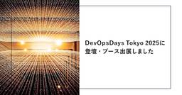
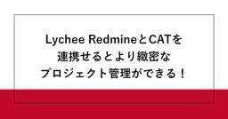
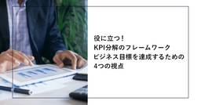
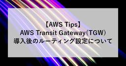
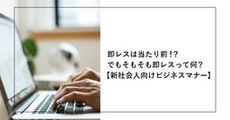
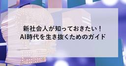

SHIFT Group 技術ブログ
https://note.shiftinc.jp
「無駄をなくしたスマートな社会の実現」を目指し、ソフトウェア製品の開発、運用、マーケティングなどあらゆる立場から携わるSHIFTグループの公式note。エンタメ・ゲーム業界から、Web系、金融／製造／小売りなどのエンタープライズ領域まで広い知見を活かした情報を発信しています。
フィード

SHIFT Agile FES「トップエンジニアが語るDX最前線」イベントレポート (クレディセゾン 小野氏、イオン 山﨑氏のディスカッション)
SHIFT Group 技術ブログ
こんにちは。CATエヴァンジェリスト・石井優でございます。続きをみる
1日前
今週の新着ブログ★新着17本(2025.5.16~2025.5.22)_即レスって何？_先輩入門_AWS Tips_ガントチャートツール４選 ほか
SHIFT Group 技術ブログ
こんにちは！「SHIFTグループ技術ブログ」編集部です。お役立ち記事を発信していますので、ぜひご注目ください！！本ブログは、IT技術だけでなくSHIFTグループのあらゆる知見やノウハウを広義の“技術”とし、入社歴や部署の垣根を超えて従業員が公式ブロガーとして記事を執筆しています。続きをみる
2日前


DevOpsDays Tokyo 2025に登壇・ブース出展しました
SHIFT Group 技術ブログ
こんにちは！DevRelの村松です。今回はDevOpsDays Tokyo 2025にトップスポンサーとして参加してきました。 DevOpsDaysへの協賛はSHIFTでは初の試みです！SHIFTがアジャイル開発のプロセス支援だけでなく技術支援、企業カルチャーの変革までトータルでご支援していることを知っていただける、いい機会になったかなと振り返っています。この記事では上記サービスを提供しているアジャイル推進部とともに準備をしてきた、SHIFTのセッション・出展ブースについてご紹介させていただきます！続きをみる
2日前

Shell Scriptを深掘り！自動化スクリプトの活用法 ～初心者でもわかるShell Scriptの基本と使い方！簡単なスクリプトで作業を自動化しよう～ 1
1
SHIFT Group 技術ブログ
はじめに続きをみる
3日前


Lychee RedmineとCATを連携させるとより緻密なプロジェクト管理ができる！
SHIFT Group 技術ブログ
こんにちは。株式会社SHIFT CATエヴァンジェリスト・石井優でございます。続きをみる
3日前
【複雑な管理方法不要！】社内ワークショップから学んだ進捗管理 徹底解説
SHIFT Group 技術ブログ
皆さん、こんにちは！株式会社SHIFTでテストPMをやってる竹下と申します。2021年8月にSHIFTへ2卒入社し、テスト実行・テスト設計を約3年担当しました。そして2025年1月からご縁があり、テスト管理を任せていただくことになりました。「すごいな～」「こんな風に自分もできるかな～」と思いながら、今までたくさんの管理者を見てきました。そんな人たちと肩を並べられるように、1日でも早く立派な管理者になるのが目標です。さて、まだまだ管理者として未熟な私が先日、実行管理者ワークショップという社内研修に参加しました。管理者の業務内容は多岐にわたりますが、その中でも進捗管理にフォーカスした内容です。今回はその研修で得た進捗管理の基本ステップの整理と、研修を通じて得られた知識の共有が出来ればと思い記事にしました！※本記事では進捗管理のすべてを網羅しているわけではありません。ワークショップで取り上げられたトピックに絞って、私自身の学びや気付きを中心に整理しています。あくまで参考情報としてご覧いただければ幸いです。続きをみる
3日前

役に立つ！KPI分解のフレームワーク：ビジネス目標を達成するための4つの視点 1
SHIFT Group 技術ブログ
こんにちは。株式会社SHIFT 能力開発部で検定や教育制度を開発をしている林 稔明（りんりん）です！ 日々、能力開発について研究し、様々な施策を実行、発信している立場から新社会人に向けて情報を発信していきたいと思います。ビジネスの現場では、目標達成のための指標としてKPI（Key Performance Indicator）が欠かせません。しかし、KPIを設定する際、「何を測ればいいのかわからない」「指標が多すぎて管理しきれない」といった悩みを抱える方も多いのではないでしょうか。続きをみる
3日前
SOCにおける時系列分析 1
SHIFT Group 技術ブログ
2024年12月に入社した中根です。SHIFTの情シス部門であるコーポレートプラットフォーム部でインフラとセキュリティ領域のとりまとめと、複数の領域にわたる問題の解決に取り組んでいます。コーポレートプラットフォーム部のセキュリティ統制グループでは、外部からの攻撃に対応するだけではなく、内部からの不正に対する監視や対応を同一のチームで実施しています。続きをみる
3日前

【AWS Tips】AWS Transit Gateway（TGW）導入後のルーティング設定について
SHIFT Group 技術ブログ
こんにちは。株式会社SHIFT インフラサービスグループのYajimaと申します。主にネットワーク関連の案件に携わっております。続きをみる
4日前
1ヶ月で変えられる意識！社会人の心得
SHIFT Group 技術ブログ
こんにちは。株式会社SHIFTの能力開発部で検定や教育制度を開発をしている林 稔明（りんりん）です！ 日々、能力開発について研究し、様々な施策を実行、発信している立場から新社会人に向けて情報を発信していきたいと思います。続きをみる
5日前

即レスは当たり前！？でもそもそも即レスって何？【新社会人向けビジネスマナー】
SHIFT Group 技術ブログ
こんにちは。能力開発部で検定や教育制度を開発をしている林 稔明（りんりん）です！ 日々、能力開発について研究し、様々な施策を実行、発信している立場から新社会人に向けて情報を発信していきたいと思います。今回のブログでは、社会人として周囲より一歩先を行くための「即レス」について、その重要性と即レスの具体的な内容をお伝えしたいと思います。続きをみる
5日前

新社会人が知っておきたい！AI時代を生き抜くためのガイド
SHIFT Group 技術ブログ
こんにちは。株式会社SHIFTの能力開発部で検定や教育制度を開発をしている林 稔明（りんりん）です！ 日々、能力開発について研究し、様々な施策を実行、発信している立場から新社会人に向けて情報を発信していきたいと思います。続きをみる
5日前
《グランプリ受賞》SHIFT Group 技術ブログが「コンテンツマーケティング・グランプリ2024」技術ブログ部門で受賞
SHIFT Group 技術ブログ
お客様の売れるソフトウェアサービス／製品づくりを支援する株式会社SHIFTが運営する公式note「SHIFT Group 技術ブログ」が、「コンテンツマーケティング・グランプリ2024」の「技術ブログ部門」においてグランプリを受賞しました。続きをみる
5日前

今週の新着ブログ★6本公開！(2025.5.10~2025.5.15)_AI開発の大航海時代、QAたちはどう生きるか_Teratermマクロを深掘り！ほか
SHIFT Group 技術ブログ
こんにちは！「SHIFTグループ技術ブログ」編集部です。お役立ち記事を発信していますので、ぜひご注目ください！！本ブログは、IT技術だけでなくSHIFTグループのあらゆる知見やノウハウを広義の“技術”とし、入社歴や部署の垣根を超えて従業員が公式ブロガーとして記事を執筆しています。続きをみる
8日前